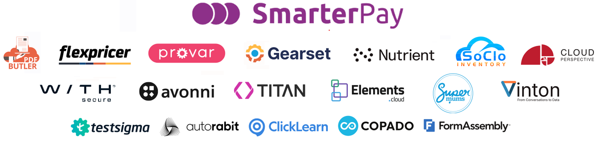

Doria Hamelryk Salesforce Technical Architect · Architecture Sensei 🧙♀️ (she taught me everything — and is therefore not responsible for this deck) 🏛️
Who in this room... 🙋
Welcome. This is a support group. ☕
🏎️ Fair warning: 40 minutes, way too much to cover, and we will go fast.
Everything is in this deck — grab it after and explore at your own pace. No topic left behind. 📦
The Reality of Technical Debt
Why it happens, what it costs, how to recognise it
What is Technical Debt?
"Any quick design decision that simplifies development today but creates future overhead."
— Ward Cunningham, 1992
In Salesforce, it looks like…
Technical Debt by the Numbers
Sources : Salesforce Architect community · Scale Center benchmarks · Google DORA · McKinsey Digital
The 7 Types of Debt — Salesforce Edition
Nested Flows, zombie Process Builders
Duplicate objects, circular relationships
Orphan fields, uncontrolled picklists
0 tests, 0 comments, tight coupling
Hardcoded IDs, API v20 still in use
0 naming conventions, 0 descriptions
Overly permissive profiles, misconfigured Connected Apps, oversized OAuth scope
The Vicious Cycle
And we
start again
Selling Technical Debt
Because technology alone isn't enough — you need to convince people
One Reality — 4 Motivation Systems
👨💻 The Developer — suffers from it
📋 The Product Owner — works around it
💼 Management — funds it
🎯 The End User — pays for it
They're not the enemy.
Agentforce — The 2026 Argument
We’re 6 months into a feasibility analysis.”
Prioritising with the Matrix
Only fix what is truly worth fixing
The Impact × Cost Matrix
· Remove inactive Process Builders
· SOQL without index on large objects
· Deactivate Flows never executed
· Fix Apex Triggers without bulkification
· Remove unused fields visible everywhere
· Migration Process Builder → Flows
· Refactor the non-scalable sharing model
· Decouple point-to-point integrations
· Refactoring Apex with near-zero coverage
· CI/CD overhaul and DevOps strategy
· Document the main custom objects
· Clean up unused picklist values
· Remove reports/dashboards never used
· Add descriptions on critical fields
· Harmonise Apex naming conventions
· Renaming an object that's "not pretty" but stable
· Rewriting Apex code that works
· Changing historical API names
· Standardising minor invisible conventions
· Replacing stable components "to modernise"
"Every debt has a cost... but not necessarily a business value worth addressing."
5 Ways to Prioritise Technical Debt
There is no single order for addressing debt. The real question: by what value system do you prioritise?
🔗 Prioritising by Dependency Order
Automations
Flows, Process Builders, Workflow Rules
Layouts
Page Layouts, Lightning Pages, Quick Actions
Business Logic
Unused Apex classes, unused Flows
Objects
Custom Objects — the final boss
Fields
After dependencies lifted
When to use: mass cleanup · decommissioning · metadata rationalisation
| Logic | Who it speaks to most | What they care about |
|---|---|---|
| Dependencies | Architects, Release Managers, Tech Leads, Integration Leads | Delivery sequencing, deployment stability, avoiding cascading failures |
| Production risk | Support teams, Operations, Platform Owners, CIO/CTO, Service Owners | Incidents, outages, data corruption, business continuity |
| ROI / hidden cost | Product Owners, Delivery Managers, PMO, Finance, Engineering Managers | Team productivity, delivery speed, operational cost, wasted effort |
| Strategic blocker | Enterprise Architects, Transformation Leads, Executives, Business Sponsors | Ability to launch new capabilities, scalability, roadmap execution |
| Domino effect | Senior Architects, Technical Leads, Platform Owners | Maximum architectural leverage, simplification, reducing systemic complexity |
💥 Prioritising by Production Risk
KPIs: incidents · downtime · rollback · failed deployments — DevOps/SRE angle
| Logic | Who it speaks to most | What they care about |
|---|---|---|
| Dependencies | Architects, Release Managers, Tech Leads, Integration Leads | Delivery sequencing, deployment stability, avoiding cascading failures |
| Production risk | Support teams, Operations, Platform Owners, CIO/CTO, Service Owners | Incidents, outages, data corruption, business continuity |
| ROI / hidden cost | Product Owners, Delivery Managers, PMO, Finance, Engineering Managers | Team productivity, delivery speed, operational cost, wasted effort |
| Strategic blocker | Enterprise Architects, Transformation Leads, Executives, Business Sponsors | Ability to launch new capabilities, scalability, roadmap execution |
| Domino effect | Senior Architects, Technical Leads, Platform Owners | Maximum architectural leverage, simplification, reducing systemic complexity |
💰 Prioritising by ROI / Hidden Cost
KPIs: velocity · lead time · delivery cost — Very powerful with managers
| Logic | Who it speaks to most | What they care about |
|---|---|---|
| Dependencies | Architects, Release Managers, Tech Leads, Integration Leads | Delivery sequencing, deployment stability, avoiding cascading failures |
| Production risk | Support teams, Operations, Platform Owners, CIO/CTO, Service Owners | Incidents, outages, data corruption, business continuity |
| ROI / hidden cost | Product Owners, Delivery Managers, PMO, Finance, Engineering Managers | Team productivity, delivery speed, operational cost, wasted effort |
| Strategic blocker | Enterprise Architects, Transformation Leads, Executives, Business Sponsors | Ability to launch new capabilities, scalability, roadmap execution |
| Domino effect | Senior Architects, Technical Leads, Platform Owners | Maximum architectural leverage, simplification, reducing systemic complexity |
🚧 Prioritising by Strategic Blocker
Angle: enterprise architect / strategic transformation
| Logic | Who it speaks to most | What they care about |
|---|---|---|
| Dependencies | Architects, Release Managers, Tech Leads, Integration Leads | Delivery sequencing, deployment stability, avoiding cascading failures |
| Production risk | Support teams, Operations, Platform Owners, CIO/CTO, Service Owners | Incidents, outages, data corruption, business continuity |
| ROI / hidden cost | Product Owners, Delivery Managers, PMO, Finance, Engineering Managers | Team productivity, delivery speed, operational cost, wasted effort |
| Strategic blocker | Enterprise Architects, Transformation Leads, Executives, Business Sponsors | Ability to launch new capabilities, scalability, roadmap execution |
| Domino effect | Senior Architects, Technical Leads, Platform Owners | Maximum architectural leverage, simplification, reducing systemic complexity |
🔥 Prioritising by Domino Effect
Fix what improves everything else — the most strategic angle
| Logic | Who it speaks to most | What they care about |
|---|---|---|
| Dependencies | Architects, Release Managers, Tech Leads, Integration Leads | Delivery sequencing, deployment stability, avoiding cascading failures |
| Production risk | Support teams, Operations, Platform Owners, CIO/CTO, Service Owners | Incidents, outages, data corruption, business continuity |
| ROI / hidden cost | Product Owners, Delivery Managers, PMO, Finance, Engineering Managers | Team productivity, delivery speed, operational cost, wasted effort |
| Strategic blocker | Enterprise Architects, Transformation Leads, Executives, Business Sponsors | Ability to launch new capabilities, scalability, roadmap execution |
| Domino effect | Senior Architects, Technical Leads, Platform Owners | Maximum architectural leverage, simplification, reducing systemic complexity |
Map and Act
Two approaches depending on your context — then build for the long term
Two Approaches — Pick Your Context
- ✓ Full audit (1–3 months)
- ✓ Sprints dedicated exclusively to debt
- ✓ Resume features afterwards
- ✓ Targeted audit — critical risks first
- ✓ Production emergencies addressed immediately
- ✓ 10–20% of each sprint dedicated to debt
- ✓ Major refactors planned separately
- ✓ Sustainable governance — standards, KPIs
⚖️ Golden rule: fix what slows teams down, puts production at risk, or prevents the business from evolving. Ignore cosmetic debt with no real ROI.
The Boy Scout Rule
Remediation Roadmap — 4 Phases
"A mature technical debt strategy starts with measurement, not refactoring."
Discovery
Quick Wins
Rationalisation
Transformation
📍 Phase 1 — Discovery & Mapping Wk 1–2
⚡ Phase 2 — Stabilisation & Quick Wins Wk 3–6
🧹 Phase 3 — Structural Rationalisation Month 2–3
🚀 Phase 4 — Strategic Transformation Month 3+
Diagnostic Tools
Native, free, available now — if time allows
The Removal Order — Important!
⚠️ Salesforce enforces strict dependencies — delete in the wrong order = guaranteed error.
Diagnostic SOQL — 3 Essential Queries
Visualforce pages — last access date ⚠ Prod org only
Identify which VF pages are actually used — candidates for cleanup.
SELECT ApexPageId, ApexPage.Name, MAX(MetricsDate) MetricsDate
FROM VisualforceAccessMetrics
GROUP BY ApexPage.Name, ApexPageIdOrphan layouts — not assigned to any active profile Tooling API
Layouts no active user profile references — safe to decommission.
SELECT Id, Name, TableEnumOrId FROM Layout
WHERE layoutType = 'Standard'
AND Id NOT IN (SELECT LayoutId FROM ProfileLayout
WHERE ProfileId IN ('Id1','Id2','Id3')
AND (recordType.IsActive = true OR recordTypeId = ''))
ORDER BY EntityDefinitionIdComponent dependencies — before any deletion Tooling API
Check what depends on a component before removing it — avoids cascading errors.
SELECT RefMetadataComponentId, RefMetadataComponentName,
RefMetadataComponentType
FROM MetadataComponentDependency
WHERE MetadataComponentId IN ('Id1','Id2')Review user permissions
5 Key Takeaways
Where to Start Monday Morning?
Setup > Scale Center
30 min
Doria Hamelryk Salesforce Technical Architect · Architecture Sensei 🧙♀️